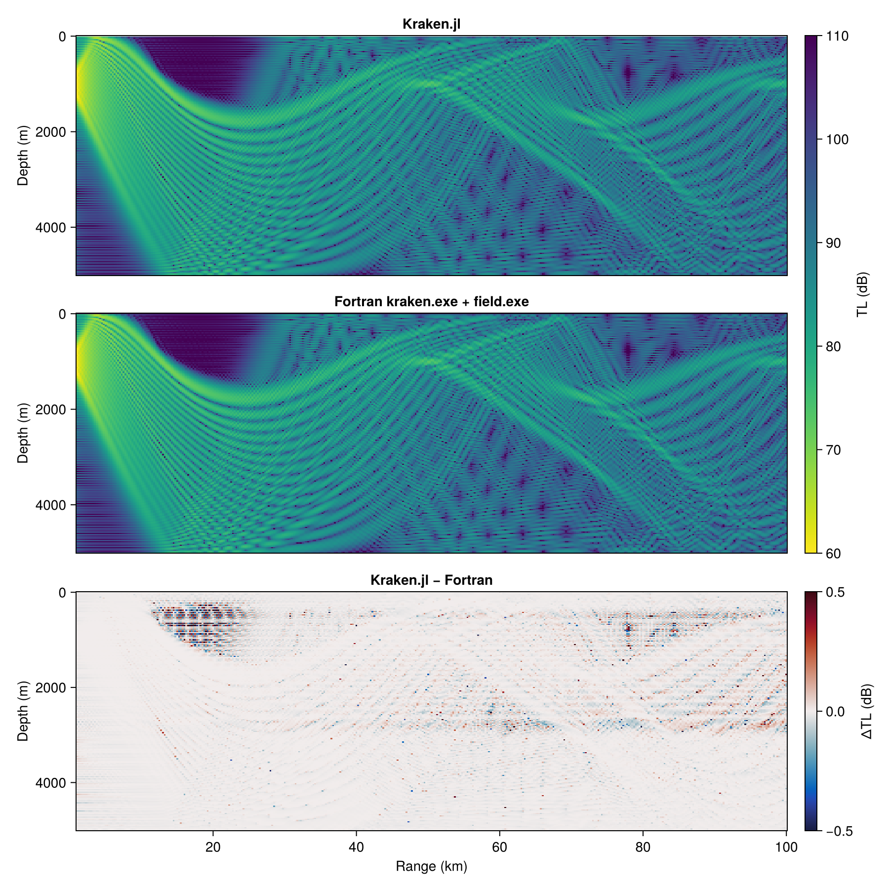
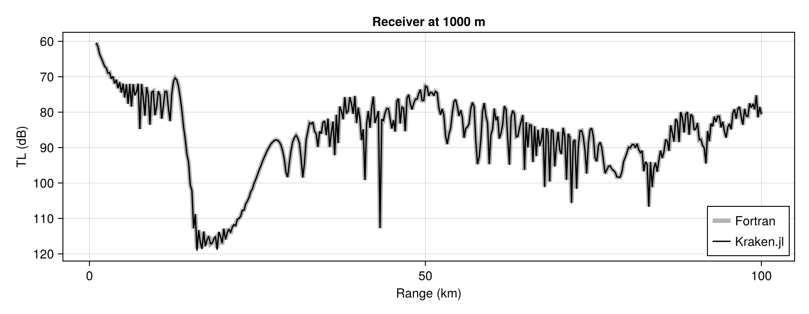

Validation against Fortran KRAKEN
Kraken.jl reimplements KRAKEN, and this page measures how far its answers are from the original's. Every number on it is computed when the documentation is built. The page runs Kraken.jl and unmodified Fortran kraken.exe and field.exe on the same environments and tabulates how far apart they are. Nothing below is copied in by hand, so the page cannot claim an agreement the current code does not have.
The machinery is the test suite's own. test/reference/ writes each environment as an Acoustics Toolbox .env file, runs the Fortran program on it, reads back the .mod, .prt and .shd files it produces, and compares. The binaries come from AcousticsToolbox_jll, which ships them prebuilt for every platform, so neither CI nor this build needs a Fortran compiler. The test suite asserts a tolerance on every case shown here, so a regression fails CI before it can reach this page.
Reference binaries for this build: AcousticsToolbox_jll v2025.9.6+0.
The standard environments
The five standard environments, each at five frequencies from 25 to 400 Hz, solved by both programs with their default meshes. max rel Δkᵣ is the largest relative difference in wavenumber over all modes and frequencies. min corr is the smallest correlation between a Julia mode shape and the matching Fortran mode, sampled at the same depths.
freqs = [25.0, 50.0, 100.0, 200.0, 400.0]
standard = [
"pekeris_env" => () -> UnderwaterEnv(pekeris_env()...),
"one_layer_env" => () -> UnderwaterEnv(one_layer_env()...),
"one_layer_slope_env" => () -> UnderwaterEnv(one_layer_slope_env()...),
"two_layer_slope_env" => () -> UnderwaterEnv(two_layer_slope_env()...),
"munk_env" => () -> UnderwaterEnv(munk_env()...),
]
rows = map(standard) do (name, build)
cs = [KR.compare_with_fortran(build(), f) for f in freqs]
modes = join(("$(c.n_julia)" * (c.n_julia == c.n_fortran ? "" : " ($(c.n_fortran))") for c in cs), ", ")
["`$name`", modes, sci(maximum(KR.max_kr_reldiff, cs)), corr(minimum(KR.min_mode_corr, cs))]
end
table(["Environment", "Modes at 25, 50, 100, 200, 400 Hz", "max rel Δkᵣ", "min corr"], rows)| Environment | Modes at 25, 50, 100, 200, 400 Hz | max rel Δkᵣ | min corr |
|---|---|---|---|
pekeris_env | 1, 2, 5, 9, 19 | 2.1e-08 | 0.9999997 |
one_layer_env | 1, 3, 5, 10, 21 | 1.4e-07 | 0.9999996 |
one_layer_slope_env | 1, 2, 5, 10, 21 | 3.8e-06 | 0.9999994 |
two_layer_slope_env | 2, 5, 10, 19, 39 | 2.7e-05 | 0.9999484 |
munk_env | 51, 102, 204 (205), 409, 817 (818) | 6.4e-06 | 0.9999720 |
A number in parentheses is Fortran's count where it differs from Julia's. That happens only for munk_env, which has hundreds of modes, and only at the last mode: a mode that close to the bottom cutoff is found by one solver's mesh and not the other's.
Attenuation
A lossy environment gives complex wavenumbers. Both programs solve the real problem and add the loss as a first-order perturbation, so the imaginary part Im(kᵣ), the modal attenuation, is compared separately, with a looser tolerance: it is the smallest part of the number, and Fortran writes it only to the single-precision .mod file. The Pekeris cases are at 100 Hz, in dB per wavelength.
lossy = [
"`pekeris_env`, lossless (control)" => UnderwaterEnv(pekeris_env()...),
"`pekeris_env`, 0.5 dB/λ in the water" => UnderwaterEnv(pekeris_env(; α0=0.5)...),
"`pekeris_env`, 0.05 dB/λ in the half-space" => UnderwaterEnv(pekeris_env(; αb=0.05)...),
"`pekeris_env`, 0.5 dB/λ in the half-space" => UnderwaterEnv(pekeris_env(; αb=0.5)...),
"`one_layer_env`, 0.4 dB/λ in the sediment" => UnderwaterEnv(one_layer_env(; α1=0.4)...),
]
rows = map(lossy) do (name, env)
c = KR.compare_with_fortran(env, 100.0)
[name, "$(c.n_compared)", sci(KR.max_kr_reldiff(c)), sci(KR.max_alpha_reldiff(c))]
end
table(["Case", "Modes", "max rel Δ Re(kᵣ)", "max rel Δ Im(kᵣ)"], rows)| Case | Modes | max rel Δ Re(kᵣ) | max rel Δ Im(kᵣ) |
|---|---|---|---|
pekeris_env, lossless (control) | 5 | 1.7e-09 | 0 |
pekeris_env, 0.5 dB/λ in the water | 5 | 1.3e-04 | 4.0e-03 |
pekeris_env, 0.05 dB/λ in the half-space | 5 | 1.3e-05 | 7.1e-04 |
pekeris_env, 0.5 dB/λ in the half-space | 5 | 5.5e-04 | 1.0e-01 |
one_layer_env, 0.4 dB/λ in the sediment | 5 | 3.0e-05 | 2.9e-03 |
The half-space rows measure a limit of the perturbation method, which both programs use. The perturbation is first order in 2ωα_b/(c_b γ²), where γ is the mode's decay rate in the bottom, and γ goes to zero at the bottom cutoff. So a strongly attenuating half-space degrades the least-trapped mode first. Ten times the half-space loss costs about a hundred times the agreement. The two programs agree exactly to first order and keep different second-order terms. Loss in the water column or a sediment layer does not degrade this way. Environments describes the accuracy limit of each approximation.
Boundary conditions
Every combination of top and bottom boundary that Kraken.jl solves, on the Pekeris column, where nothing else about the problem changes between cases. The last row puts a rigid bottom under the curved Munk profile, interpolated n²-linearly.
bcs = [
(RigidBoundary(), AcousticHalfspace(), 100.0),
(PressureRelease(), RigidBoundary(), 100.0),
(PressureRelease(), PressureRelease(), 100.0),
(RigidBoundary(), RigidBoundary(), 100.0),
(RigidBoundary(), PressureRelease(), 100.0),
(PressureRelease(), PressureRelease(), 50.0),
(PressureRelease(), RigidBoundary(), 50.0),
]
rows = map(bcs) do (top, bottom, f)
c = KR.compare_with_fortran(UnderwaterEnv(pekeris_env()...; top_bc=top, bottom_bc=bottom), f)
["`$top` / `$bottom`", "$(Int(f))", "$(c.n_julia)", sci(KR.max_kr_reldiff(c)), corr(KR.min_mode_corr(c))]
end
c = KR.compare_with_fortran(UnderwaterEnv(munk_env()...; ssp_interp=:n2_linear, bottom_bc=RigidBoundary()), 10.0)
push!(rows, ["`munk_env`, n²-linear, `PressureRelease()` / `RigidBoundary()`", "10", "$(c.n_julia)",
sci(KR.max_kr_reldiff(c)), corr(KR.min_mode_corr(c))])
table(["Top / bottom", "Hz", "Modes", "max rel Δkᵣ", "min corr"], rows)| Top / bottom | Hz | Modes | max rel Δkᵣ | min corr |
|---|---|---|---|---|
RigidBoundary() / AcousticHalfspace() | 100 | 5 | 6.2e-10 | 0.9999999 |
PressureRelease() / RigidBoundary() | 100 | 13 | 1.4e-10 | 0.9999944 |
PressureRelease() / PressureRelease() | 100 | 13 | 6.3e-09 | 0.9999935 |
RigidBoundary() / RigidBoundary() | 100 | 14 | 3.3e-10 | 0.9999928 |
RigidBoundary() / PressureRelease() | 100 | 13 | 1.4e-10 | 0.9999939 |
PressureRelease() / PressureRelease() | 50 | 6 | 2.1e-10 | 0.9999932 |
PressureRelease() / RigidBoundary() | 50 | 7 | 6.1e-05 | 0.9999905 |
munk_env, n²-linear, PressureRelease() / RigidBoundary() | 10 | 66 | 7.9e-06 | 0.9999854 |
The 50 Hz rigid-bottom row is looser than the rest because its last mode is close to grazing, at kᵣ ≈ 0.046 against ω/c ≈ 0.209, so a tiny absolute error in kᵣ² looks large relative to kᵣ.
Sound-speed interpolation
The three interpolations KRAKEN offers give different wavenumbers from the same table, so this section checks that each Kraken.jl option matches its Fortran counterpart. The test profile is a coarse, strongly curved duct: five samples 50 m apart over a 1700 m/s half-space, so the interpolants disagree between samples. Each row is a Kraken.jl interpolation, each column a Fortran one, and each cell the max relative Δkᵣ between them at 50 Hz.
duct_z = [0.0, 50.0, 100.0, 150.0, 200.0]
duct_c = [1540.0, 1500.0, 1480.0, 1500.0, 1530.0]
function duct(interp)
ssp = hcat(duct_z, duct_c, zeros(5), fill(1000.0, 5), zeros(5), zeros(5))
sspHS = [0.0 343.0 0.0 1.21 0.0 0.0; 200.0 1700.0 0.0 1800.0 0.0 0.0]
return UnderwaterEnv(ssp, [0.0 0.0 200.0], sspHS; ssp_interp=interp)
end
reldiff(a, b) = (n = min(length(a), length(b)); maximum(abs.(a[1:n] .- b[1:n]) ./ abs.(b[1:n])))
interps = [:c_linear => "C-linear (`C`)", :n2_linear => "n²-linear (`N`)", :cubic_spline => "cubic spline (`S`)"]
fortran = Dict(m => KR._best_fortran_kr(KR.run_fortran_kraken(duct(m), 50.0)) for (m, _) in interps)
julia = Dict(m => Float64.(real.(kraken_jl(duct(m), 50.0).kr)) for (m, _) in interps)
rows = [[label; [sci(reldiff(julia[m], fortran[o])) for (o, _) in interps]] for (m, label) in interps]
table(["Kraken.jl ↓ / Fortran →"; [l for (_, l) in interps]], rows)| Kraken.jl ↓ / Fortran → | C-linear (C) | n²-linear (N) | cubic spline (S) |
|---|---|---|---|
C-linear (C) | 7.7e-08 | 1.2e-04 | 1.8e-03 |
n²-linear (N) | 1.2e-04 | 7.0e-08 | 1.8e-03 |
cubic spline (S) | 1.8e-03 | 1.8e-03 | 5.2e-09 |
The diagonal is the agreement. The off-diagonal entries show how far apart the interpolations themselves are. They are at least three orders of magnitude larger, so a solve that used the wrong interpolation could not pass.
Munk sound channel transmission loss
The tables on this page reduce each comparison to a number. This section shows one field in full: the Munk deep-water profile at 50 Hz, with the source at 1000 m, just above the sound-channel axis, out to 100 km. The case is hard for three reasons. There are 102 modes. There is a near-surface shadow zone where they cancel to 110 dB and more. And there are convergence zones about 60 km apart, where refracted energy returns to the surface, which appear only if the relative phases of all the modes stay right across 100 km. Both programs compute the field on the same 201-depth × 397-range grid.
munk = UnderwaterEnv(munk_env()...)
field_cmp = KR.compare_field_with_fortran(munk, 50.0, 1_000.0:250.0:100_000.0, 1000.0, 0.0:25.0:5000.0)
fig = Figure(; size=(900, 900))
tl_range = (60.0, 110.0)
ax_julia = Axis(fig[1, 1]; title="Kraken.jl", ylabel="Depth (m)", yreversed=true)
hm = plot_tl!(ax_julia, field_cmp.ranges, field_cmp.zr, field_cmp.tl_julia; colorrange=tl_range)
ax_fortran = Axis(fig[2, 1]; title="Fortran kraken.exe + field.exe", ylabel="Depth (m)", yreversed=true)
plot_tl!(ax_fortran, field_cmp.ranges, field_cmp.zr, field_cmp.tl_fortran; colorrange=tl_range)
Colorbar(fig[1:2, 2], hm; label="TL (dB)")
ax_diff = Axis(fig[3, 1]; title="Kraken.jl − Fortran", xlabel="Range (km)", ylabel="Depth (m)", yreversed=true)
hd = plot_tl!(ax_diff, field_cmp.ranges, field_cmp.zr, field_cmp.tl_julia .- field_cmp.tl_fortran;
colormap=:balance, colorrange=(-0.5, 0.5))
Colorbar(fig[3, 2], hd; label="ΔTL (dB)")
linkaxes!(ax_julia, ax_fortran, ax_diff)
hidexdecorations!(ax_julia; grid=false)
hidexdecorations!(ax_fortran; grid=false)
fig
RMS difference over the grid: 0.064 dB, over 79400 points.
The difference panel is on a ±0.5 dB scale and is nearly blank. What structure it has is where the field is weakest. In the shadow zone, TL is above 110 dB because a hundred modes nearly cancel, so any small difference in the individual modes survives the sum at full size. The two programs' meshes differ, and Fortran passes its modes to field.exe through a .mod file in single precision. The individual specks are interference nulls, where TL changes by tens of dB within one grid cell, so any difference is magnified.
A cut at the source depth shows the same agreement as curves, through the shadow zone and the first convergence zone:
i = findfirst(==(1000.0), field_cmp.zr)
fig = Figure(; size=(900, 350))
ax = Axis(fig[1, 1]; xlabel="Range (km)", ylabel="TL (dB)", yreversed=true, title="Receiver at 1000 m")
plot_tl_range!(ax, field_cmp.ranges, field_cmp.tl_fortran[i, :]; label="Fortran", linewidth=5, color=(:gray, 0.6))
plot_tl_range!(ax, field_cmp.ranges, field_cmp.tl_julia[i, :]; label="Kraken.jl", color=:black)
axislegend(ax; position=:rb)
fig
Both figures use the extension's own plot_tl! and plot_tl_range!, which take a plain TL matrix, so field.exe's output is drawn exactly as Kraken.jl's is.
Pressure field and transmission loss
The field from acoustic_field against field.exe, each computed from its own program's modes for the same environment. The grid is 19 ranges from 1 to 10 km by 9 receiver depths, with the source at 36% of the water depth. The differences are in transmission loss, in dB.
field_envs = ["`pekeris_env`" => UnderwaterEnv(pekeris_env()...), "`one_layer_env`" => UnderwaterEnv(one_layer_env()...)]
ranges = collect(1_000.0:500.0:10_000.0)
rows = Vector{String}[]
for (name, env) in field_envs, mode in (:coherent, :incoherent)
zr = collect(range(0.1 * env.depth, 0.9 * env.depth, 9))
cs = [KR.compare_field_with_fortran(env, f, ranges, 0.36 * env.depth, zr; mode=mode) for f in (50.0, 100.0, 200.0)]
push!(rows, ["$name, `:$mode`"; [@sprintf("%.3f / %.3f", c.rms_db, c.max_db) for c in cs]])
end
table(["Case", "50 Hz", "100 Hz", "200 Hz"], rows)| Case | 50 Hz | 100 Hz | 200 Hz |
|---|---|---|---|
pekeris_env, :coherent | 0.003 / 0.010 | 0.024 / 0.162 | 0.016 / 0.059 |
pekeris_env, :incoherent | 0.002 / 0.004 | 0.014 / 0.019 | 0.010 / 0.013 |
one_layer_env, :coherent | 0.002 / 0.006 | 0.035 / 0.424 | 0.015 / 0.091 |
one_layer_env, :incoherent | 0.002 / 0.004 | 0.008 / 0.012 | 0.009 / 0.015 |
Each cell is RMS / max difference over the grid. The coherent field is the stricter comparison, since its interference nulls are where transmission loss is most sensitive. The complex pressures agree too, phase included: Kraken.jl uses KRAKEN's exp(i(ωt − kᵣr)) convention and its point-source normalization, so the two fields can be compared with no conjugation and no rescaling.
The Acoustics Toolbox's own test cases
The Acoustics Toolbox ships about 400 .env files of its own. The test suite reads every one it can, sorts them by the feature that stops Kraken.jl from solving them, and cross-validates the rest. Those files are GPL-3 and Kraken.jl is MIT, so they are read in place from a local toolbox checkout and never copied into this repository. That makes the comparison opt-in (set KRAKEN_OALIB_TESTS to the toolbox's tests/ directory) and keeps it out of this build. The latest counts, and which features block the remaining files, are in test/README.md.
Unimplemented features
- Leaky modes. Modes with phase speed above the bottom sound speed need a complex root finder (
krakenc.exe). Kraken.jl finds trapped modes only. - Elastic media. Shear speeds are read and ignored, so an elastic layer or bottom is out of scope.
- An acoustic half-space above the water. The top boundary may be pressure-release or rigid.
- A cubic spline through several media. KRAKEN splines each medium separately; Kraken.jl builds one interpolant for the whole column, so
:cubic_splineis limited to a single medium. - Added volume attenuation (Thorp, Francois–Garrison, biological layers) and interfacial roughness.
To compare against a particular Acoustics Toolbox build rather than the packaged one, point KRAKEN_FORTRAN_BIN at a directory containing kraken.exe and rebuild these docs or rerun the tests.
KrakenFortran.jl is a separate, optional package that calls Fortran KRAKEN in process through ccall. Kraken.jl does not depend on it and does not use it for validation: its sources are a MEX-adapted fork of an older KRAKEN, so it is a performance option for broadband sweeps rather than a statement about correctness. Validating against a fork would prove nothing about agreement with upstream KRAKEN.